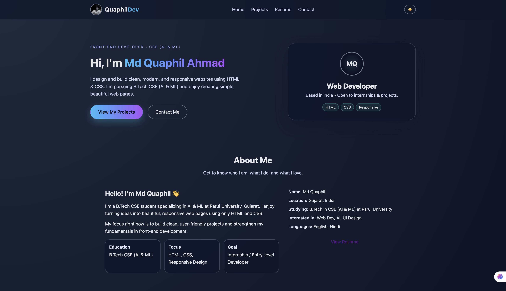
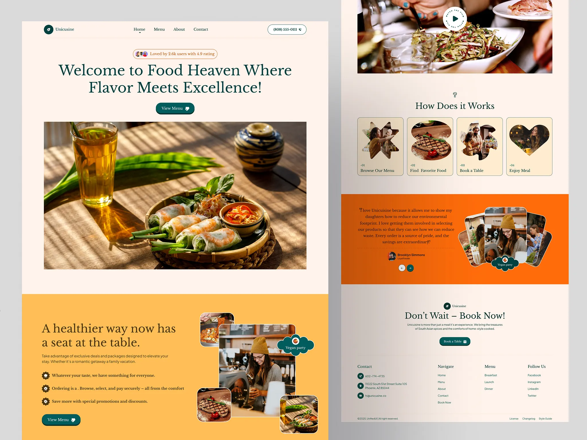
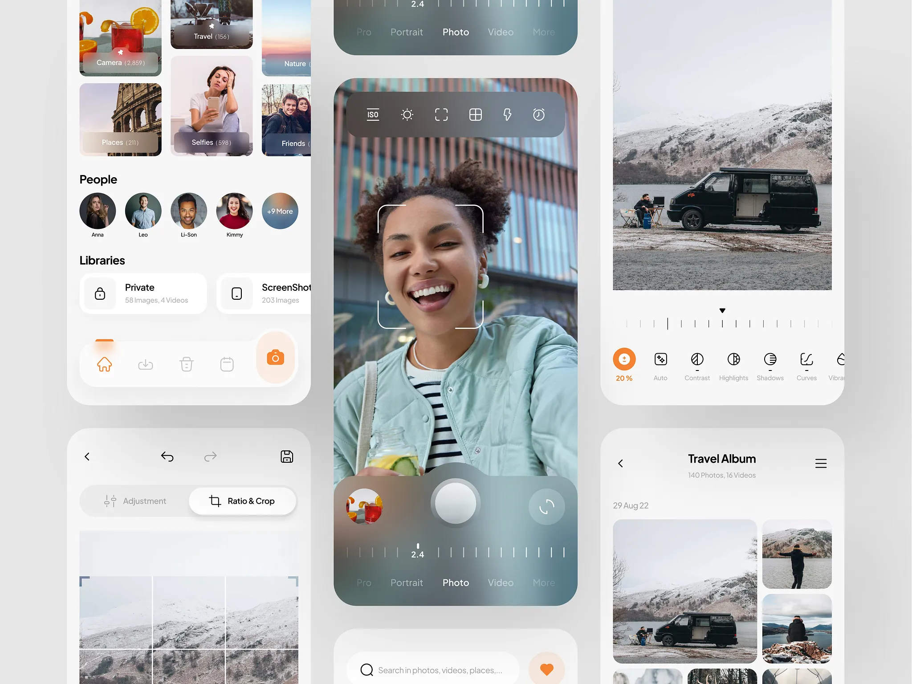
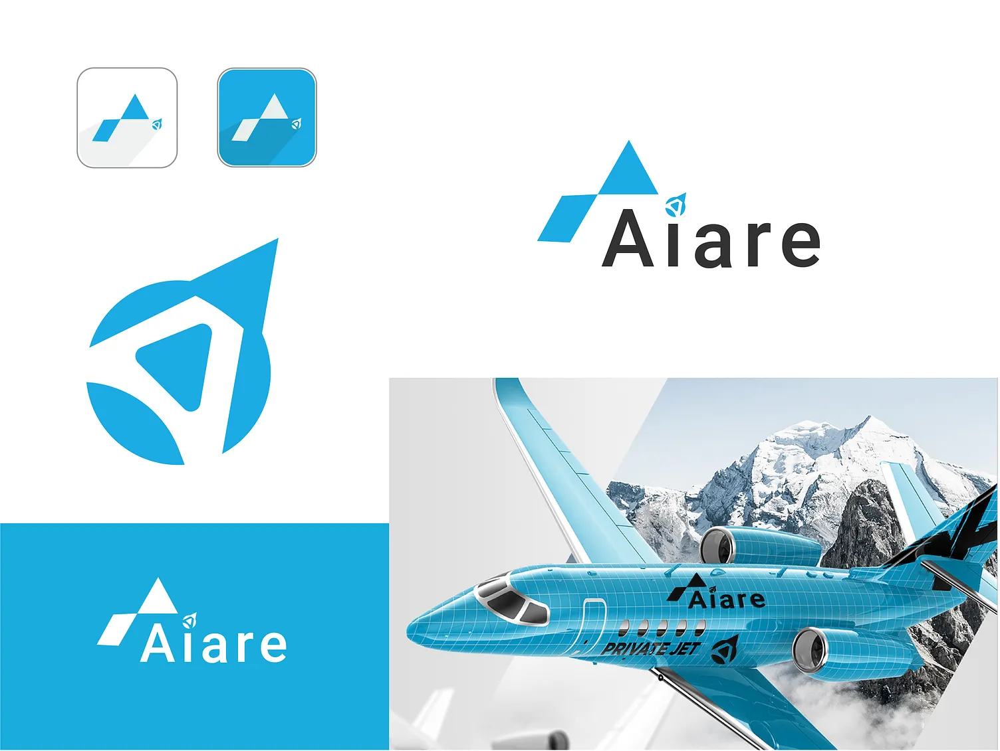
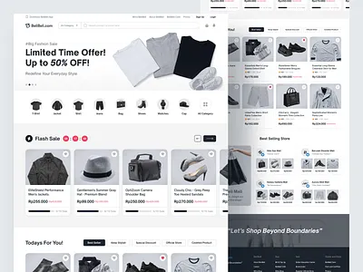

Main Portfolio
Personal Portfolio Website
A modern, responsive portfolio website with multiple sections, smooth layout, and a clean design built using only HTML and CSS.
- HTML5
- CSS3
- Responsive
My Work
Here is a detailed list of my HTML & CSS projects – from portfolio layouts to landing pages. Each project helped me improve my design sense and coding skills.
A closer look at some of the work I am proud of.

A modern, responsive portfolio website with multiple sections, smooth layout, and a clean design built using only HTML and CSS.

A stylish landing page for a restaurant with hero image, menu highlight cards, and contact section. Designed to look clean on both desktop and mobile.

A responsive image gallery using CSS Grid. Includes hover effects and captions to showcase photography or design work beautifully.

Blog-style homepage with featured posts, sidebar, and footer navigation to practice layout structure and typography.

A clean single-page resume with sections for education, skills, and experience. Designed to be printable and easy to read.

A clean e-commerce landing page with a product grid, pricing, and CTA buttons. Designed to practice layout, typography, and highlighting products in a simple, modern UI.